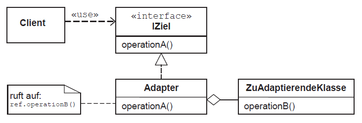
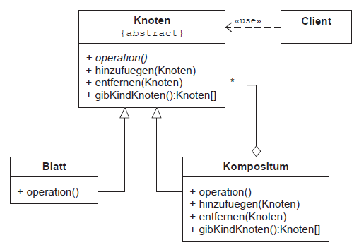
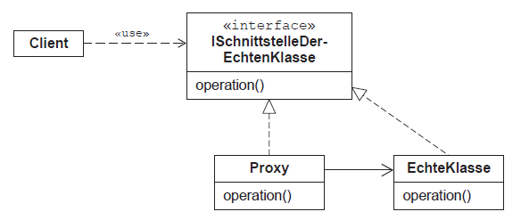

Strukturmuster
Adapter Pattern
Das Adapter Pattern fungiert als Bruecke zwischen zwei inkompatiblen Schnittstelle. Diese Art von Entwurfsmuster faellt unter
das Strukturmuster, da dieses Muster die Faehigkeit zweier unabhaengiger Schnittstellen kombiniert.
Bei diesem Muster handelt es sich um eine einzelne Klasse, die fuer die Verknuepfung von Funktionen unabhaengiger oder
inkompatibler Schnittstellen verantwortlich ist. Ein reales Beispiel koennte ein Kartenleser sein, der als Adapter zwischen
Speicherkarte und Laptop fungiert. Sie stecken die Speicherkarte in den Kartenleser und den Kartenleser in den Laptop damit die
Speicherkarte ueber den Laptop gelesen werden kann.

Composite Pattern (Kompositum)
Ein zusammengesetztes Muster wird verwendet, wenn die Gruppe von Objekten auf aehnliche Weise, wie ein einzelnes Objekt behandelt
werden soll. Das Composite Pattern setzt Objekte in Form einer Baumstruktur zusammen, um sowohl Teil- als auch Gesamthierarchie
darzustellen. Diese Art von Entwurfsmuster wird als Strukturmuster bezeichnet, da dieses Muster eine Baumstruktur von Objektgruppen
erstellt.
Dieses Muster erstellt eine Klasse, die eine Gruppe eigener Objekte enthält. Diese Klasse bietet die Moeglichkeiten zum Aendern der
Gruppe derselben Objekte.

Proxy Pattern
Das Proxy Pattern repraesentiert eine Klasse die Funktionalitaet einer anderen Klasse. Diese Art von Entwurfsmuster faellt unter die
Kategorie Strukturmuster.

Decorator Pattern (Dekorierer)
Mit dem Decorator Pattern kann ein Benutzer einem vorhandenen Objekt neue Funktionen hinzufuegen ohne dessen Struktur
zu aendern. Diese Art von Entwurfsmuster faellt unter die Kategorie Strukturmuster, da dieses Muster als Wrapper fuer
die vorhandene Klasse fungiert.
Dieses Muster erstellt eine Dekorator-Klasse, die die ursprüngliche Klasse umschließt und zusätzliche Funktionen
bereitstellt, die die Signatur der Klassenmethoden intakt halten.